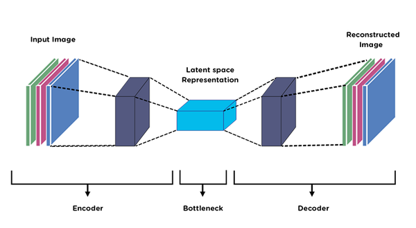

Winter 2022/23 Undergraduate Research Volunteer (URV) ProgramLast updated: 2023-08-22 |
|---|
Introduction, What is URV, & Kick-off Meeting
Here's a post about the Undergraduate Research Volunteer (URV) program that CICS held during winter session of 2022/23. This was my first research experience, so I wanted to summarize what I did throughout the weeks of the program in this post. The Undergraduate Research Volunteer (URV) program is an opportunity that the UMass College of Information and Computer Science provides to undergraduate students in the college to explore some sort of research under the guidance of a PhD mentor. The topics generally were under machine learning, data science, natural language processing, data collection and statistical analysis, etc.
I got into the program and attended the kick-off meeting/information session at the very beginning of winter session. The program itself is 6.5 weeks long, began December 20 2022, and ends February 3 2023. We learned that only 35 applicants were selected out of the 88 who applied. My group consisted of three members other than myself and our PhD mentor.
Week 1: Proposed Project & Literature Review
Program Intro
We met with our group and our PhD mentor gave us a general overview of what her personal research deals with, what our project proposal would be, and what would be expected from us in the next few weeks. My group specifically researched under UMass CICS's LASS: Laboratory for Advanced System Software. The following information in this blogpost will detail the part of our project that I worked on.
Proposed Project
Our project proposal was on enabling trust on untrusted edges/edge nodes. Most mobile applications are distributed, which means that the components of the application are split across different aspects: front-end, back-end, and edge nodes.
The front-end could be hosted on the device itself, and the back-end could be hosted on some cloud/big data center for large applications or some server/database for smaller applications. Edge nodes, or edge computing, are smaller servers located near the end device. "Edge" could mean some edge device or some mini cloud or cluster that is near your location. Our research focused on the latter definition of edge here.
Most, if not all, applications use context-aware data processing where they store temporal, spatial, personal, etc. data such as geolocation. Because of these context-aware applications, they tend to use machine learning for specific tasks (i.e. using machine learning with user data to either train the ML model or to get some inference with an existing model to give recommendations/predictions for you -- aka predictive analytics). To train these models, we need to get data from many users, train some general model, and recognize patterns that the user showcases every time the applications provides some service to a user. The ML model can output according to these patterns. The traditional method of training these types of ML models is via various queries to the cloud which happens on the device (i.e. facial recognition trains on the device itself since it's a smaller model of just one user's data).
That is the context behind our problem statement. Our problem is that since there are models that are trained on the cloud and clouds tend to be far away, we need the user to make queries to edge providers instead of the cloud directly. Users may trust big cloud providers such as Meta, but they may not necessarily trust third-party edge provider companies that they have to send their data to. This problem statement sounds like it could be solved with some sort of encryption, but by the time of the proposal of this project, encryption has not made enough progress to provide security to these sorts of issues.
Our proposed work was to modify the data that users send in a way to preserve privacy, allow for ML models to use that data instead of the raw data, and allow edge nodes to have access to the ML model but not the raw information.
Literature Review
I never did research before and neither did any of the other two group mates. Our PhD mentor explained to us what a literature review was: a comprehensive summary and deep-dive into previous research on the topics of note for our own research. She taught us to not read papers linearly and to use Google Scholar (type in keywords) to conduct a successful literature review. Here is the process of reading papers she suggested:
- read the title
- read the abstract
- read a little bit of the introduction: try to get some higher-level idea, the author will present what they're doing in the paper near the end of the introduction
- read related work section: to find additional papers on similar subjects
- read the conclusion: to find what the take-away is
- read the figures: captions help, diagrams usually explain their methodology
- decide if you want to continue reading this paper more in-depth
After our meeting to learn about the project proposal and to learn what a literature review was, I spent the next 7 days researching to find papers that were close to what we were researching. Specifically, we were looking for papers that talked about how to allow users to modify data to be privacy preserving and how to enable ML models to use modified data on the edge (this should preserve utility so original data cannot be inverted or reconstructed). After finding each paper, I annotated them and added a quick summary for each one of topical content in our research notebook.
Here are some of the papers that I found that you can read for your own leisure:
- Privacy and Utility Preserving Sensor-Data Transformations
- Context-Aware Generative Adversarial Privacy
- Censoring Representations with an Adversary
- ScreenAvoider: Protecting Computer Screens from Ubiquitous Cameras
- Deep Private-Feature Extraction
- Privacy-Preserving Release of Mobile Sensor Data
- Privacy-utility trade-off for time-series with application to smart-meter data
Week 2: Generate Research Questions, Hypotheses, and Metrics for Evaluation
For week 2, we focused more on generating our research questions and how to evaluate our results (when we get results). Our PhD mentor taught us about various types of machine learning models as well as ways to reconstruct data. We learned about split learning and autoencoders.
Context & Topics
Split learning refers to having multiple layers in the data. The goal behind them is to run part of the neural network on the device, send this layer to the edge, and the edge can continue from here and train/run the rest of the model. Autoencoders are a way to manipulate data and come up with some different version of it by taking input, compactifying it, and reconstructing it in some other format.
Basics of Autoencoders. Autoencoders (AE) are type of… | by Deepak Birla | Medium
Generating Hypotheses
Usually we do empirical evaluations, which means we evaluate based off observed behavior in experiments. In this case, we take our data set UCI Machine Learning Repository: Human Activity Recognition Using Smartphones Data Set, run the model on it, and look to see how it evaluates. In our case, in terms of how to evaluate, we want to see how much leakage there is before versus after running the model on it. We are trying to protect raw data, so some metric we could use is data distribution (i.e. what the raw versus transformed data looks like when plotted), and accuracy (how close the transformed data is to the raw).
After we talked about potential research questions, hypotheses, and metrics of evaluation, we wrote all our findings in our research journal. I read a lot about differential privacy during my literature review, so most of my questions regarded if various noise-addition methods would maintain differential privacy, with my metric of evaluation being sensitivity. Differential privacy is a way to share information about a dataset while still withholding information about the individual data the dataset is comprised of. Sensitivity, or the maximum difference between outputs, of differential privacy is to be minimized in order for it to be more difficult for adversaries to get information.
Week 3: Implement Baseline Method
The method we wanted to implement is called LSTM-SPLIT. LSTM stands for long-short term memory, which is a type of recurrent neural network (RNN) that is effective in processing time-series data. It deals with the vanishing and exploding gradient problem when training RNNs, and can process point data as well as sequential data without relation to points in previous steps.
Week 4-6: Implement Baseline Method Continued
We knew we wanted to use LSTM-SPLIT as our RNN, so we looked at tutorials on how to write a RNN for LSTM, using packages like Python's
- Keras (TensorFlow package)
- Numpy
- Pandas (for reading CSV files/our dataset)
- Sklearn (for data visualization)
- and Matplotlib (for plotting data to compare the raw vs. transformed data).
Noise Addition Results |
|
|---|---|
| Method | Accuracy |
| Gaussian | 90.546% (+/-0.588) |
| Exponential | 88.086% (+/- 2.723) |
| Laplace | 90.329% (+/- 0.993) |
We ended up using numpy's existing random noise addition function, since there was no noticable difference when we ran the LSTM RNN on different types of noise.
Conclusion
In conclusion, I think this was a very memorable experience. My group mates were supportive and communicative throughout the entire process, which was a plus since the entire program is done remotely. My PhD mentor was especially helpful and clarified points of confusion throughout the entire process (i.e. what is a good hypothesis) and checked in with is very often, making the initiative to schedule meetings and one-on-one meetings if we were particularly stuck. A very important point of note I believe to mention is my PhD mentor was not judgemental and worked solely on helping our understanding instead of focusing on points to criticize. This unassuming stance that she took in terms of our skill level was particularly helpful as it was my first time ever doing actual research in this field. This experience definitely solidified my stance on this subject, and I would like to do similar things in the future. Unfortunately, we were not able to complete our code or do as much as we wanted, but I'm proud of my PhD mentor and my group for what we were able to put out.
In February, we had our URV poster sessions where each group was able to showcase their findings and research. The pictures from the event can be found here, and here is a blurb that CICS wrote about the event in the CICS weekly newsletter:
The Undergraduate Research Volunteers (URV) finale and poster session was held last week. URV matches computer science undergraduates with a doctoral student mentor to explore research projects and network with students and faculty. Nine teams presented research posters from seven CICS labs.